Propuesta · 5 de octubre de 2026Todavía no hay nada en el juego. Los «antes» son fotos del juego de hoy y renders de su malla con sus texturas. Los «después» se hicieron con la misma cámara, la misma luz y el mismo sistema de piezas y texturas del juego, así que si se aprueba pasa al juego tal cual.
De las pruebas en grupo: «Es un boss complejo… tira habilidades que te hacen consumir tótem con más facilidad… sus ataques no dejan que un jugador se acerque mucho… en diseño siento que es muy top».
Así que se mantienen la dificultad y lo llamativo. Lo que cambia: que imponga más, que sus ataques se lean de lejos y que haya forma de llegar a ella.
Cambio
El cuerpo
Antes · la de hoy
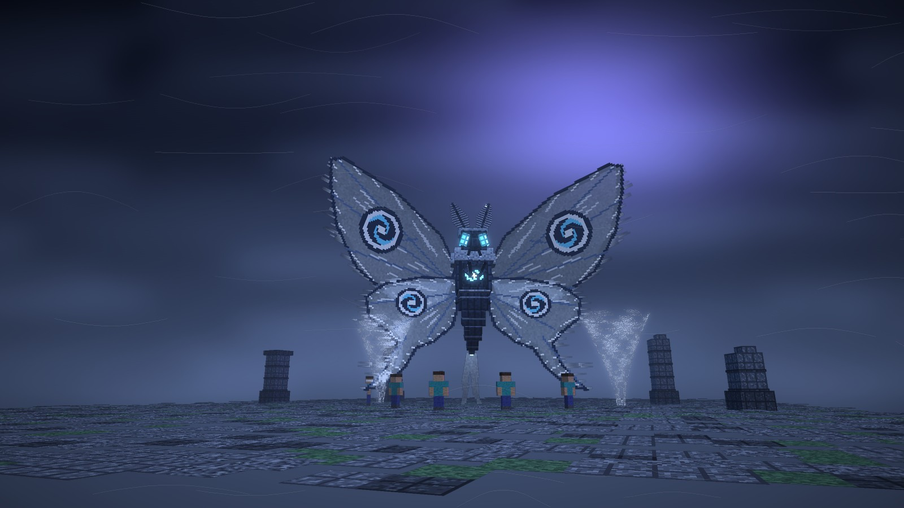
Después · la misma cámara
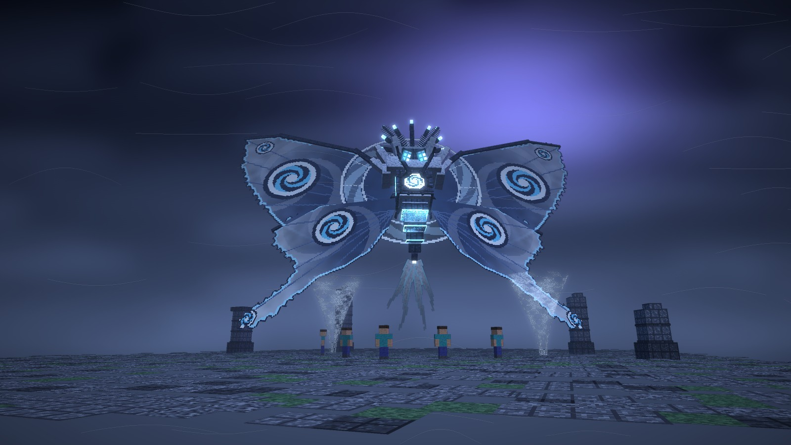
Qué cambia
Alas mucho más grandes: unos 35 bloques de envergadura (hoy, 22). Son de tormenta: oscuras junto al cuerpo y claras hacia fuera, con nubes que giran hacia ocelos de ciclón más grandes y el filo entero encendido en el color de la fase.
La costa de cada ala es una vara de quitina de verdad, no un dibujo plano, así que el ala se lee como una estructura.
Un halo de viento de 14 bloques detrás de la espalda, que gira.
Corona de siete púas con la punta encendida, colmillos más largos y antenas de pluma que barren hacia atrás como cuernos.
Melena de nubes alrededor del cuello, con mechones abiertos.
Las patas de delante son de presa, con cuchilla, como una mantis.
El ojo de la tormenta del pecho es mayor y lleva un marco de ocho púas. El abdomen tiene juntas que brillan y cuatro cintas de viento.
Lo que trae el tamaño
Envergadura
22 → unos 35 bloques
Alto
17 → unos 24 bloques, con las alas en alto
Vuelo
4,5 bloques más alta: el tórax a unos 15 en vez de 9, para que las colas de las alas no rocen el suelo
Caja de golpe
la misma, solo el cuerpo: las alas siguen sin caja
Volar más alto apenas cambia nada: hoy ya solo baja al alcance de la espada aturdida o agotada. Para llegar a ella están el Picado y las Corrientes ascendentes.
Antes · frente, perfil y espalda
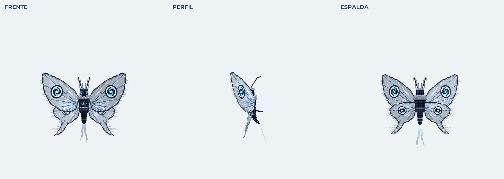
Después · a la misma escala
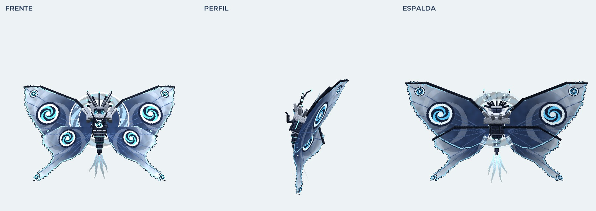
La escala, en bloques
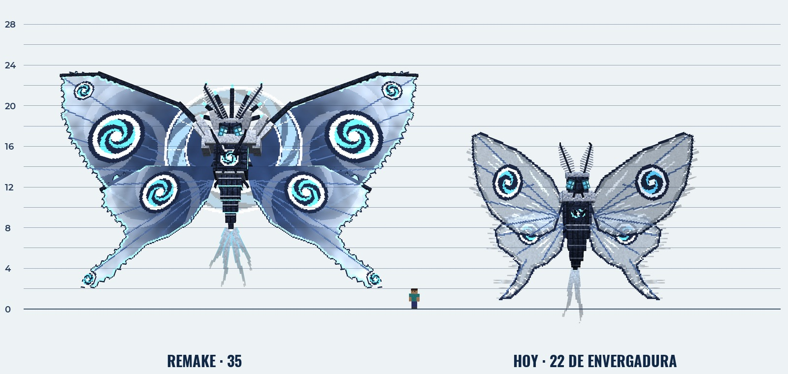
A la izquierda el remake; en el centro, un jugador; a la derecha, la de hoy. Cada raya es un bloque.
Cambio
Las cuatro fases
Antes
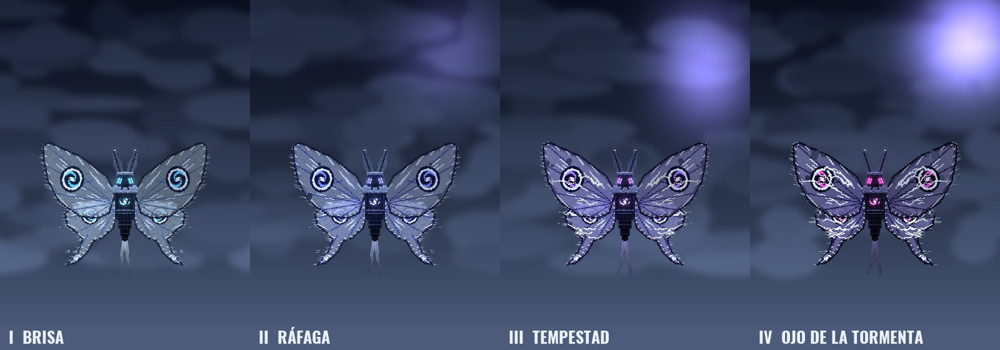
Después
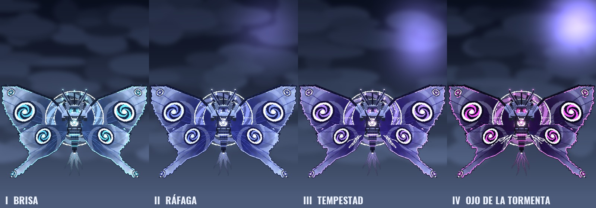
Fase
Color
Lo que se ve en el remake
I · Brisa
cian
Las alas limpias, el filo encendido y el halo tenue.
II · Ráfaga
añil
El viento empieza a llevarse el margen de las alas, en jirones.
III · Tempestad
violeta
Rayos por las venas de las alas y por la banda del halo.
IV · Ojo de la tormenta
magenta
Las alas rasgadas, el halo hecho un anillo de rayos y el ojo del pecho al rojo.
Después · la fase IV sobre la cima
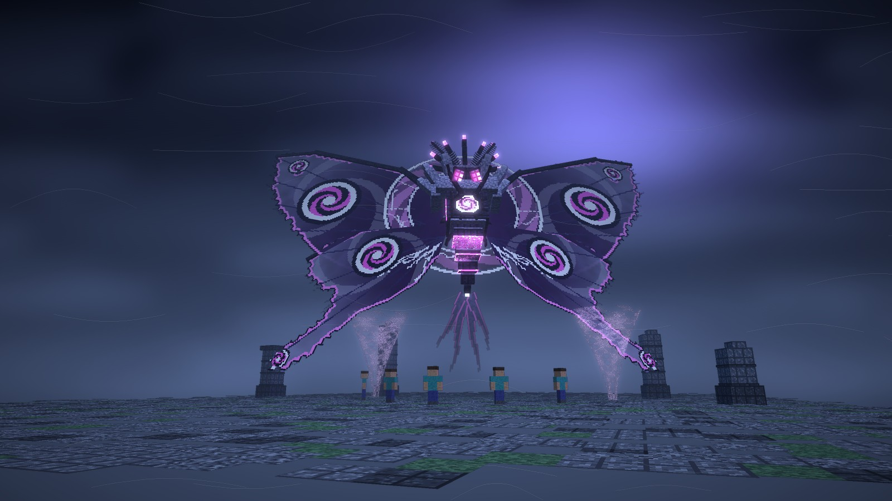
HUD
La barra de vida y los efectos
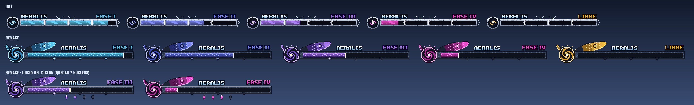
Arriba la de hoy y debajo el remake, en las cuatro fases y liberada. En la última fila, durante el Juicio del Ciclón. Ampliadas a ×3.
La barra
El emblema es mayor: el ojo de la tormenta en espiral, con la corona de púas del remake.
Del emblema sale un ala por encima del marco, con su ocelo y el filo encendido.
El relleno lleva el color de la fase dentro de la imagen, de la tormenta oscura al filo claro, y su frente brilla.
Las muescas de fase son ojos de tormenta que se apagan al pasarlos.
Nuevo: durante el Juicio del Ciclón salen cuatro cristales bajo la barra, uno por núcleo, y se apagan al romperlos. Así todos saben cuántos quedan.
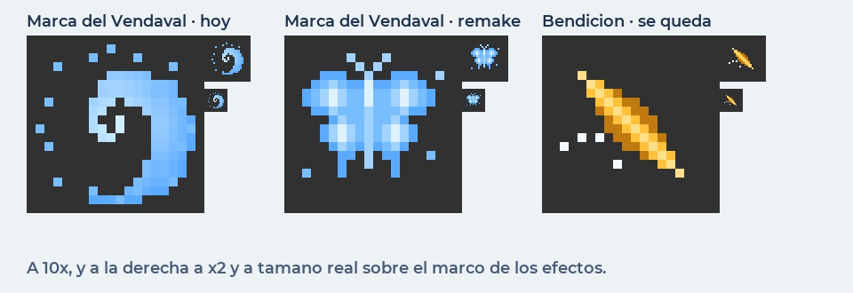
La Marca del Vendaval pasa de espiral a polilla de viento, la misma que persigue a la presa en la Cacería, con el mismo azul, así que se sigue reconociendo. La Bendición de los Vientos se queda como está.
Cambio
Aleteo Cortante
Antes · en el juego
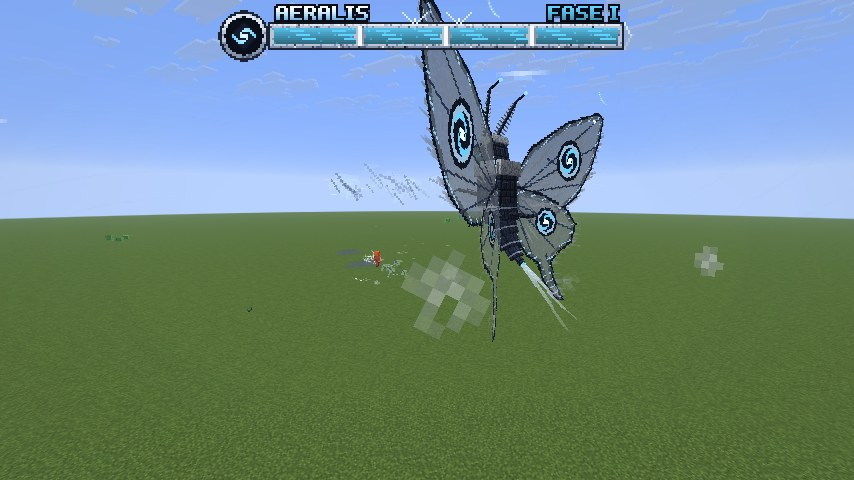
Después
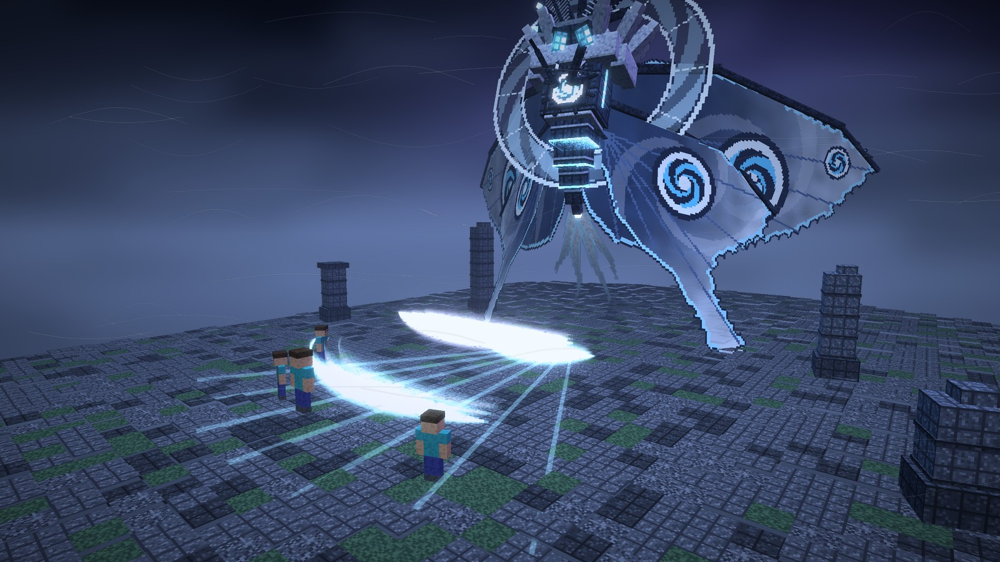
Las cuchillas pasan a ser medias lunas con el filo casi blanco y una estela que se deshace.
Las bajas van en el color de la fase (se saltan) y las altas en blanco (hay que apartarse): se distinguen de un vistazo.
El abanico se marca en el suelo 0,4 s antes y el ala que va a cortar se enciende.
El daño, el número de cuchillas y el escudo se quedan igual: 31 / 39 / 49 / 61.
Cambio
Tornados
Antes · en el juego
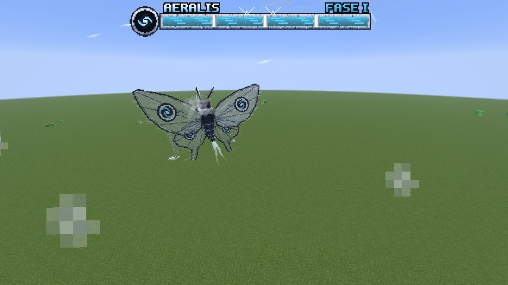
Hoy el aviso es polvo gris y el embudo casi no se ve contra el cielo. En la foto ni sale.Después · fase III
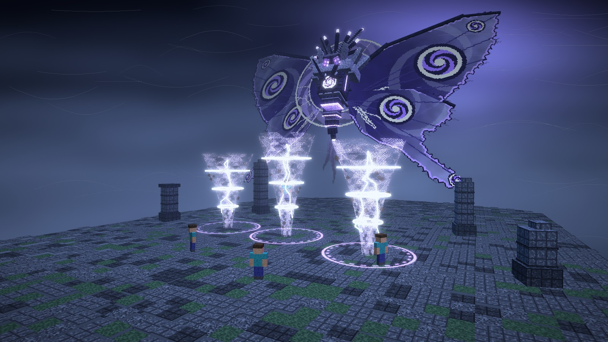
Embudo de dos capas en el color de la fase, con escombros que giran: se ve de lejos.
Un aro en el suelo marca hasta dónde atrapa.
Tres anillos de luz son sus tres golpes: con cada golpe se apaga uno.
El daño al atrapado (139 / 139 / 139 / 174), los golpes de cada núcleo y el aturdimiento con daño doble se quedan igual.
Nuevo
Picado del Vendaval
Marca la línea y se lanza
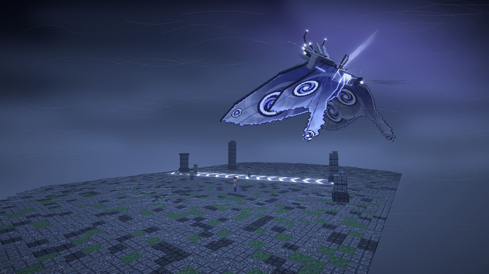
Al acabar, se posa
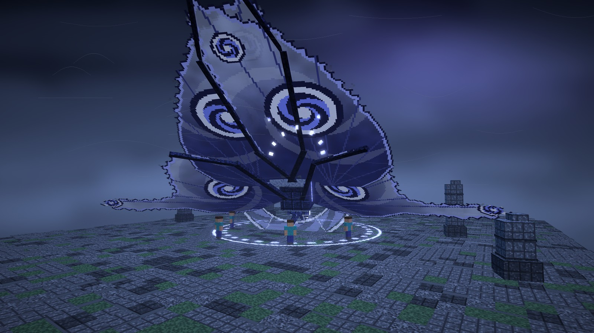
Sube, marca en el suelo una línea de galones de luz hacia su presa y se lanza en picado por ella con las alas plegadas. A quien pille lo lanza por los aires. Al final se posa como una polilla en reposo, con las alas cerradas hacia arriba y jadeando: es la ventana para la espada que pedía el grupo.
Desde
la fase II
Aviso
la línea, de unos 35 bloques: 1,2 s (0,8 en la IV)
Picado
unos 30 bloques/s por la línea
Daño
45 / 56 / 70 (fases II a IV), contra armadura, y te lanza unos 8 bloques. No mata.
Posada
3 s en el suelo con daño doble
Enfriamiento
20 s, menos en cada fase
Nuevo
Escamas de Tormenta
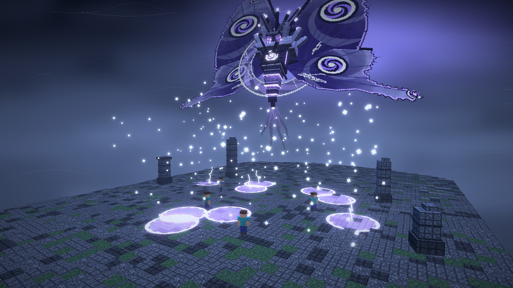
Las polillas sueltan escamas. Sube y sacude las alas sobre la cima: cae una nube de escamas que brillan y, donde se posan, el suelo se carga y descarga. Obliga a moverse, y junto a los tornados aprieta mucho.
Desde
la fase III
Aviso
1,5 s sacudiendo las alas; luego caen durante 2 s
Manchas
de 2,5 bloques, en un área de 30; se cargan 1 s y descargan
Daño
20 / 28 (fases III y IV) y Lentitud 2 s
Duran
6 s
Nuevo
Corrientes ascendentes
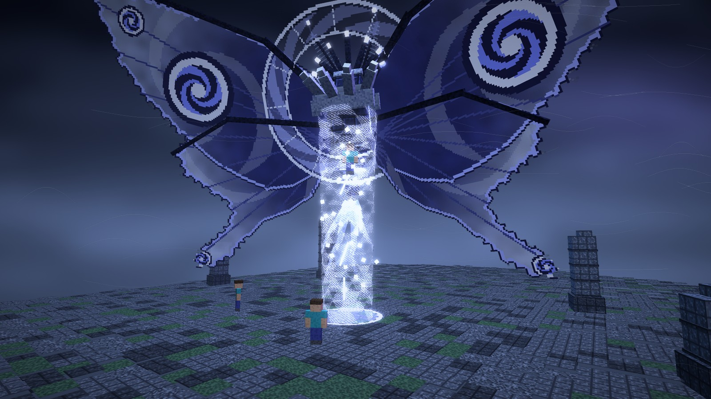
No es un ataque: es la respuesta del grupo a «no deja acercarse». Cada tornado que rompéis deja durante unos segundos una corriente que sube. Quien entra vuela hasta su altura y planea, con tiempo para pegarle al cuerpo con la espada.
Desde
la fase II
Sale
donde se rompe un tornado (3 golpes)
Dura
6 s
Efecto
te sube unos 15 bloques y te deja caída lenta 4 s
Lo que hay que decidir
Si no dices otra cosa, se hace lo que pone «por defecto» en cada una.
¿El cuerpo nuevo tal cual (alas de 35, halo, corona, melena, patas de presa)?Por defecto: sí.
¿Vuela 4,5 bloques más alta para que las alas grandes no rocen el suelo?Por defecto: sí. La otra opción es plegar más las alas de abajo, que se ven menos.
Picado: ¿desde la fase II, sin matar, y posada 3 s con daño doble?Por defecto: sí. Si lo queréis mortal (que gaste tótem) como la Embestida de Rajang, se cambia.
Escamas de Tormenta: ¿desde la fase III, con Lentitud 2 s?Por defecto: sí.
¿Corrientes ascendentes al romper un tornado?Por defecto: sí.
¿Más daño por fase, como se hizo con Rajang?Por defecto: no. Ya es el jefe más difícil. Los ataques nuevos se reparten el turno con los de ahora, así que la presión se queda parecida.
¿La barra y el icono de la Marca nuevos?Por defecto: sí.